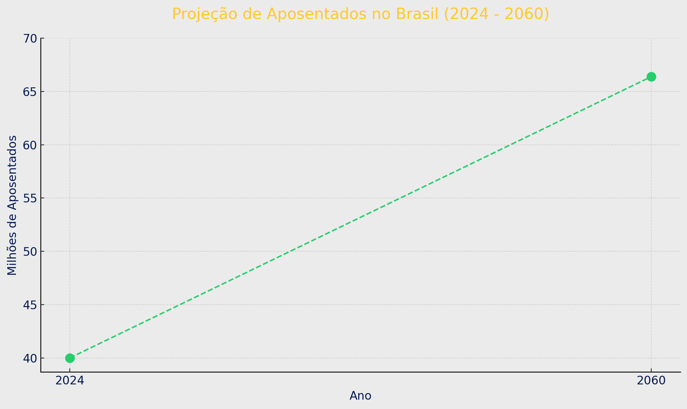

Como Funciona o Sistema Previdenciário
O sistema previdenciário é uma estrutura financeira fundamental que assegura a proteção social dos trabalhadores após anos de contribuição. Ele é financiado por meio de contribuições feitas por trabalhadores, empregadores e o governo. O modelo atual é baseado na solidariedade entre gerações, onde os trabalhadores ativos sustentam os aposentados.
Com a implementação de reformas, o sistema busca garantir a sua sustentabilidade a longo prazo, equilibrando as contas e evitando déficits que possam comprometer os benefícios. Assim, é crucial que todos compreendam seu funcionamento para melhor planejar sua aposentadoria.

Sistema de Pontos
No sistema de pontos, a soma da sua idade com o tempo de contribuição determina a sua elegibilidade para a aposentadoria. Esse sistema foi criado para incentivar os trabalhadores a contribuírem por mais tempo, garantindo assim uma aposentadoria mais digna.
Atualmente, as regras estabelecem que:
Requisitos Atuais
- Homens: 100 pontos (soma da idade e do tempo de contribuição)
- Mulheres: 90 pontos
É importante ficar atento às mudanças nas regras, já que o número de pontos exigidos pode aumentar ao longo do tempo, refletindo a necessidade de ajustes na previdência.

Idades Mínimas para Aposentadoria
Após a reforma da previdência, as idades mínimas para aposentadoria foram estabelecidas como:
- 65 anos para homens
- 62 anos para mulheres
Essas idades são importantes para que os trabalhadores se preparem com antecedência. A expectativa de vida da população pode impactar essas idades, com possíveis ajustes anuais, refletindo a saúde e bem-estar da sociedade.
Idade e Tempo de Contribuição
Para se aposentar, é fundamental atingir a idade mínima e ter um mínimo de 15 anos de contribuição ao INSS. Essa combinação assegura que o trabalhador terá direito a um benefício digno e suficiente para a sua manutenção.
Importância das Idades
- Planejamento: Conhecer a idade mínima ajuda os trabalhadores a se prepararem para a aposentadoria, organizando suas finanças e tempo de contribuição.
- Sustentabilidade: A definição de idades mínimas e o aumento gradual visam garantir que o sistema previdenciário permaneça sustentável a longo prazo, evitando colapsos futuros.
Tempo de Contribuição Necessário
- Homens: 20 anos de contribuição
- Mulheres: 15 anos de contribuição
Para obter 100% do benefício, é necessário contribuir por um período ainda maior, o que torna fundamental o planejamento ao longo da vida profissional.
Entre em Contato
Se você tiver dúvidas ou precisar de mais informações sobre sua aposentadoria, não hesite em entrar em contato conosco. Nossa equipe está pronta para te ajudar!
Email: contato@bemviver.com
Telefone: (11) 1234-5678